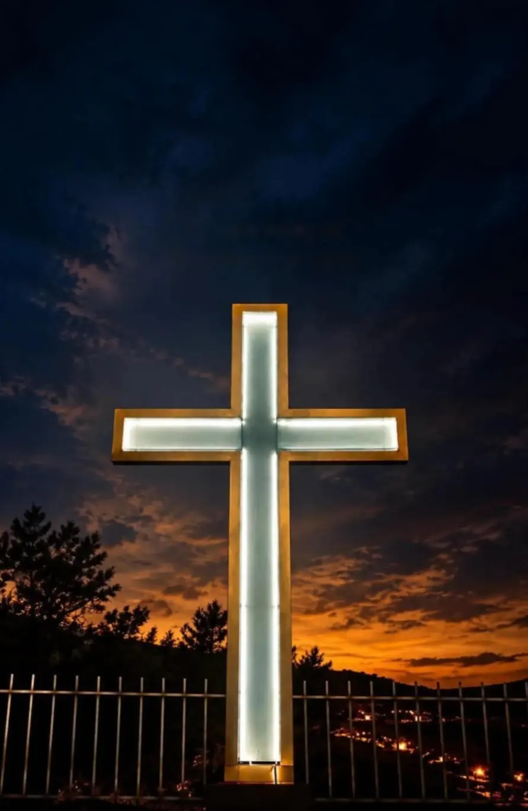
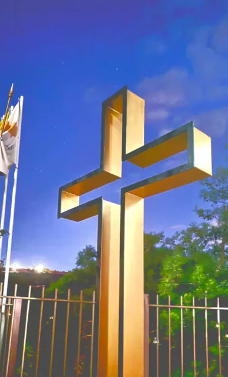
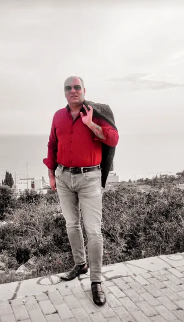

Ευαγόρας Γεωργίου Γλύπτης στη Λεμεσό
Γλυπτά από μέταλλο, γυαλί, ξύλο και φως — μορφές που στέκονται μέσα στον χώρο και τον αλλάζουν.

Φωτεινός σταυρόςΝύχτα
Κάθε έργο ξεκινά από ένα υλικό που δεν μοιάζει ακόμη με τίποτα. Μέταλλο, γυαλί, ξύλο. Σιγά σιγά παίρνει μορφή — ένας σταυρός που φωτίζει τη νύχτα, ένα βιολί που ανθίζει πεταλούδες, ένας ξιφίας ψηλά πάνω από τους λόφους.
Γλυπτά & δημιουργίες
Επιλεγμένα έργα του Ευαγόρα Γεωργίου. Πατήστε σε κάθε έργο για να το δείτε ολόκληρο.
Ο φωτεινός σταυρός
Τη μέρα, ένα καθαρό περίγραμμα από χρυσό μέταλλο δίπλα στη σημαία. Τη νύχτα, ένα φωτεινό σημάδι πάνω από την πόλη. Το ίδιο έργο, δύο χαρακτήρες — κυλήστε και δείτε τη μέρα να γίνεται νύχτα.

Πώς γεννιέται ένα γλυπτό
Η ιδέα
Ένα σύμβολο, μια μορφή, ένα συναίσθημα. Όλα ξεκινούν από κάτι που αξίζει να μείνει — μια πίστη, μια μνήμη, ένα σχήμα από τη φύση.
Το υλικό
Μέταλλο, γυαλί, ξύλο. Κάθε υλικό έχει τον δικό του χαρακτήρα και επιλέγεται για αυτό που θέλει να πει το έργο.
Η μορφή
Κόψιμο, λύγισμα, ένωση, ζωγραφική. Η μορφή χτίζεται κομμάτι κομμάτι, ώσπου το υλικό να πάψει να είναι απλώς υλικό.
Ο χώρος
Ένα σαλόνι, μια αυλή, ένας λόφος. Το έργο ολοκληρώνεται όταν βρει τη θέση του — και το φως του.
Έργα κάτω από τον ουρανό της Κύπρου
Μερικά έργα ζουν έξω, στον ήλιο και στον αέρα — πάνω σε βάθρο ψηλά στους λόφους, ανάμεσα στα δέντρα, απέναντι από τα βουνά.

Ευαγόρας Γεωργίου
Ο Ευαγόρας Γεωργίου ζει και δημιουργεί στη Λεμεσό της Κύπρου.
Τα έργα του κινούνται ανάμεσα στην πίστη, την ελληνική ταυτότητα, τη φύση και το ανθρώπινο σώμα: σταυροί που φωτίζουν, οι μορφές του Χριστού και του Αγίου Γεωργίου, η ελληνική σημαία πάνω σε ξύλο, ένας ξιφίας, μια χορεύτρια, ένας γυναικείος κορμός.
Δουλεύει με μέταλλο, γυαλί και ξύλο — και συχνά με το ίδιο το φως, που γίνεται κομμάτι του έργου.
Συχνές ερωτήσεις
Κάτι άλλο; Στείλτε ένα μήνυμα — απαντά ο ίδιος ο γλύπτης.
Ο Ευαγόρας Γεωργίου ζει και δημιουργεί στη Λεμεσό της Κύπρου. Αν θέλετε να δείτε κάποιο έργο από κοντά ή να συζητήσετε κάτι συγκεκριμένο, ο πιο άμεσος τρόπος είναι ένα μήνυμα στο Instagram, όπου απαντά ο ίδιος.
Κυρίως με μέταλλο, γυαλί και ξύλο. Σε ορισμένα έργα το ξύλο γίνεται επιφάνεια για ζωγραφική, όπως στη μορφή του Χριστού και στην ελληνική σημαία, ενώ σε άλλα το φως ενσωματώνεται στο ίδιο το γλυπτό, όπως στον φωτεινό σταυρό.
Για τη διαθεσιμότητα ενός έργου, στείλτε μήνυμα με το όνομα ή μια φωτογραφία του έργου που σας ενδιαφέρει. Θα λάβετε απάντηση απευθείας από τον γλύπτη, ο οποίος θα σας ενημερώσει για ό,τι χρειάζεστε να ξέρετε.
Αν έχετε στο μυαλό σας ένα έργο για το σπίτι, την επιχείρηση ή έναν εξωτερικό χώρο, μπορείτε να επικοινωνήσετε με τον γλύπτη και να του την περιγράψετε. Μια φωτογραφία του χώρου βοηθά να γίνει η κουβέντα πιο συγκεκριμένη.
Ναι. Ο φωτεινός σταυρός και ο ξιφίας στέκονται σε ανοιχτούς χώρους, εκτεθειμένοι στον ήλιο και στον καιρό της Κύπρου. Ο σταυρός, μάλιστα, αλλάζει χαρακτήρα όταν πέφτει το σκοτάδι και ανάβει το φως του.
Οι νέες δημιουργίες του Ευαγόρα Γεωργίου δημοσιεύονται πρώτα στο Instagram (evagoras.georgiou) και στο TikTok (artevans9). Εκεί θα βρείτε και βίντεο που δείχνουν τα έργα από κάθε πλευρά.
Μιλήστε με τον γλύπτη
Για ένα έργο που είδατε, για διαθεσιμότητα ή για μια δική σας ιδέα — στείλτε μήνυμα στον Ευαγόρα.